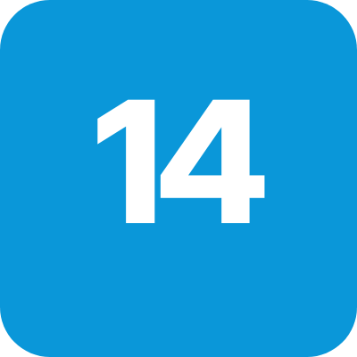

Informasi SDGs
Bagaimana pengelolaan sampah berkontribusi pada tujuan pembangunan berkelanjutan 2030.

Kota & Permukiman Berkelanjutan
Tujuan 11 mendorong kota yang inklusif, aman, dan berkelanjutan, termasuk pengelolaan sampah kota.
- Pemilahan sampah dari rumah mengurangi beban TPA.
- Bank sampah memperkuat ekonomi lingkungan.
- Laporan warga membantu kota lebih bersih.

Konsumsi & Produksi Bertanggung Jawab
Tujuan 12 mengajak kita mengurangi sampah melalui pencegahan, pengurangan, daur ulang, dan penggunaan kembali.
- Terapkan 3R dalam keseharian.
- Pilih produk dengan kemasan minim.
- Kurangi sampah makanan dengan perencanaan belanja.

Penanganan Perubahan Iklim
Tujuan 13 menyerukan aksi cepat melawan perubahan iklim. Sampah organik yang menumpuk menghasilkan gas metana.
- Kompos mengurangi emisi metana.
- Daur ulang menghemat energi produksi.
- Kurangi pembakaran sampah terbuka.

Ekosistem Lautan
Tujuan 14 melindungi laut dan sumber dayanya. Sebagian besar sampah laut berasal dari daratan.
- Kurangi plastik sekali pakai.
- Jangan buang sampah ke sungai dan pantai.
- Ikuti aksi bersih pantai bersama komunitas.